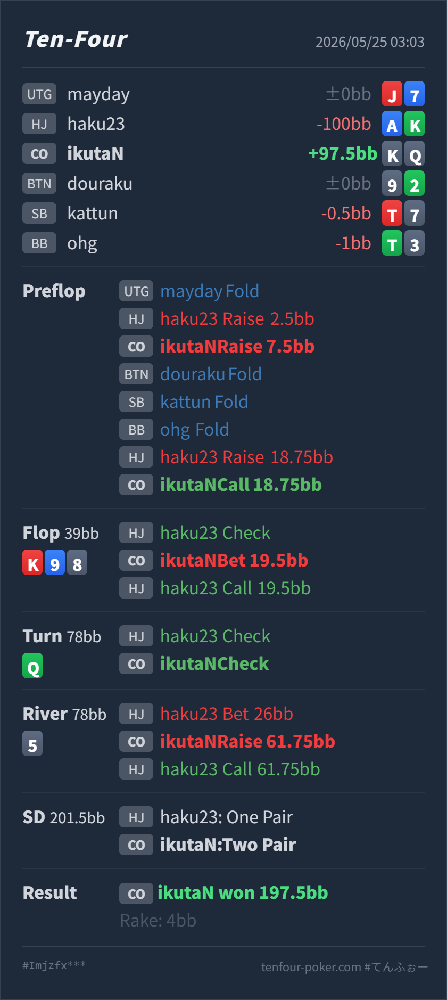

Preflop
境界 / 相手依存K♦Q♦ はblockerとplayabilityがあり、IPでは4bet call候補に残せます。ただしHJの4betはかなり強いrangeになりやすく、AKにdominateされる点は重いです。
GTO基準では、HJ openに対するCO K♦Q♦ の3betは自然ですが、HJの4betにcallするところは相手依存の境界です。postflopではflopのhalf pot betがやや大きく、最大の改善点はturn Q♣ でtop two pairになった後のcheck backです。SPRが低く、相手にAK/AAが多く残るため、ここはvalue jam寄りに打ち切りたい場面です。
K♦ Q♦A♠ K♣K♥ 9♠ 8♦ Q♣ 5♦K♦Q♦ をcallし、K♥ 9♠ 8♦ Q♣ 5♦ のriver small leadにraise all-inしてよいか。K♦ K♥ Q♦ Q♣ 9♠ のtwo pairです。Villainは K♣ K♥ A♠ Q♣ 9♠ のone pairで、Heroが勝っています。K♦ Q♦A♠ K♣2.5BB, CO Hero raise 7.5BB, BTN fold, SB fold, BB fold, HJ Villain raise 18.75BB, CO Hero callK♥ 9♠ 8♦ Q♣ 5♦39BB, HJ Villain check, CO Hero bet 19.5BB, HJ Villain call78BB, HJ Villain check, CO Hero check78BB, HJ Villain bet 26BB, CO Hero raise 61.75BB, HJ Villain call197.5BB, rake 4BB
境界 / 相手依存K♦Q♦ はblockerとplayabilityがあり、IPでは4bet call候補に残せます。ただしHJの4betはかなり強いrangeになりやすく、AKにdominateされる点は重いです。
K♥ 9♠ 8♦サイズ大きめ
Heroはtop pairとして十分強い一方、value targetはQQ/JJ/TTやAQ系に限られ、AK以上には負けています。
Q♣取り逃し
Heroはtop two pairに改善し、AK/AAを大きく上回りました。JT/KK/QQには負けますが、HJの4bet rangeではJTは少なく、HeroはKとQをblockしています。
5♦良い
Heroのtwo pairはかなり強く、HJのAK/AA/some Kxから追加valueを取れます。負ける相手はJT、set、まれなslowplayです。
| 論点 | その場で置きがちな見立て | どこがズレやすいか | 次回の基準 |
|---|---|---|---|
| HJ 4betへのKQs call | KQsなので位置ありでcallできそう | KQsはblockerとplayabilityがありcall候補ですが、HJの4bet rangeはCO/BTN周りよりかなり強くなりやすいです。相手がAK/QQ+中心なら、dominateされる頻度も高くなります。 | IPでも相手が堅い4bettorならfold寄り。広く4betする相手にはcallを残す |
| flop half pot | top pairなのでvalue/protectionで打てそう | 4bettor側にはAK/AA/KKが多く、check後でも弱くなり切っていません。KQは強いshowdown valueですが、half potで大きく膨らませるとAK以上に捕まりやすいです。 | flopは25-33%程度の小さめbetかcheck backを優先 |
| turn check back | JTが完成したので警戒してcheckできそう | Q♣ でHeroはtop two pairに改善しています。HJの4bet rangeにJTはかなり少なく、むしろAK/AAが多く残ります。SPR的にも、ここで打たないとriverで取り切りにくいです。 | top two pair以上になったら、低SPRではvalue jamを第一候補にする |
| river raise | 小さく打たれたのでraiseしてよさそう | raise自体は良いですが、本来はturnで先に取り切れる場面です。riverまで回すと、相手のcheckした強いhandや一部のstraightに当たるリスクも残ります。 | river small leadには薄くcallで済ませず、AK/AAが払う相手ならvalue raise。ただしturn value missもセットで反省する |
| ストリート | その時点の見え方 | 実ハンドの位置づけ | 評価 | その場の一手 |
|---|---|---|---|---|
| Preflop | HJが 2.5BB openし、COから3bet。HJが 18.75BB へ4betしています。 | K♦Q♦ はblockerとplayabilityがあり、IPでは4bet call候補に残せます。ただしHJの4betはかなり強いrangeになりやすく、AKにdominateされる点は重いです。 | 境界 / 相手依存 | 3betは良いです。4bet callは相手が標準以上に4betするなら許容、堅いHJならfold寄りに落としてよいです。 |
Flop K♥ 9♠ 8♦ | 4bettorのHJがcheck。COはtop pair Q kickerを持っていますが、HJにはAK/AA/KKが多く残ります。 | Heroはtop pairとして十分強い一方、value targetはQQ/JJ/TTやAQ系に限られ、AK以上には負けています。 | サイズ大きめ | betするなら小さめが扱いやすいです。19.5BB half potは、弱いhandを降ろしつつ強いrangeにcallされやすく、少し大きいです。 |
Turn Q♣ | Pot 78BB、残りは約 61.75BB。HJが再度checkしています。 | Heroはtop two pairに改善し、AK/AAを大きく上回りました。JT/KK/QQには負けますが、HJの4bet rangeではJTは少なく、HeroはKとQをblockしています。 | 取り逃し | value jamが第一候補です。AK/AAから最大を取りやすく、riverでactionが止まる前に打ち切れます。check backは慎重すぎます。 |
River 5♦ | HJが 26BB のsmall lead。Heroの残り 61.75BB をraise all-inしています。 | Heroのtwo pairはかなり強く、HJのAK/AA/some Kxから追加valueを取れます。負ける相手はJT、set、まれなslowplayです。 | 良い | raise all-inで良いです。特に今回のようにAKがcallする相手には、small betにcallだけで済ませると明確に取り逃します。 |
Q♣ は今回の最大valueポイントです。Heroがtop two pairになり、相手のAK/AAがかなり支払い得る低SPRなので、ここはjamで取り切る発想を持ちたいです。A♠K♣ で、flop check-call、turn check、river small leadからraise all-inにcallしています。このタイプには、top two pair以上をturnで早めにjamして問題ありません。